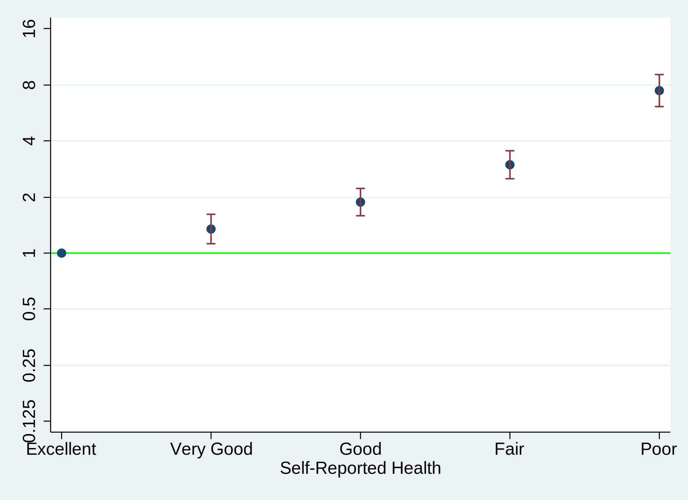
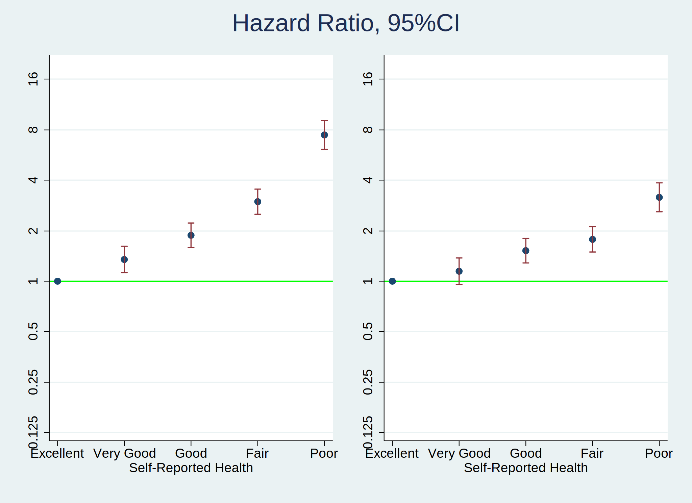
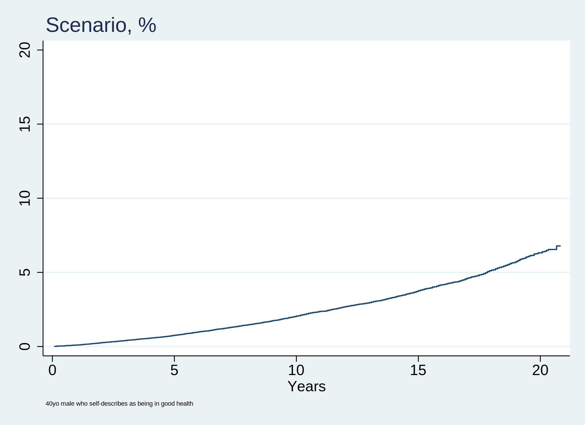

Background:* A user downloads and installs a system of program files, mostly ado-files, which form the foundation of most of the commands used in Stata Programming. Using those commands and additional syntax written out sequentially in a do-file, the user creates well-formed instruction to Stata called a do-file script. Once the user runs this script, results are generated and displayed in the results window, in a graph, or in a format (.xlsx, .log, .dta, .docx, .md, LaTeX, .html, etc). The .html file format is of specific interest since its the pathway to self-publication. To illustrate how this may be achieved in Stata, we hereby introduce the dyndoc command.
We would like to investiagte the mortality by using the NHANES linked mortality data from 1999-2000 The potential confounders considered are age and sex Information of the linked mortality can be found here: https://ftp.cdc.gov/pub/HEALTH_STATISTICS/NCHS/datalinkage/linked_mortality/
Methods: This is a dataset from NHANES 1999-2000. We use the non-parametric and parametric methods to estimate the survival
. cls
. //1. data
. global repo "https://raw.githubusercontent.com/vrshank/project/main/"
. global nhanes "https://wwwn.cdc.gov/Nchs/Nhanes/"
.
. //2. code
. do ${repo}followup.do
. save followup, replace
. import sasxport5 "${nhanes}1999-2000/DEMO.XPT", clear
. merge 1:1 seqn using followup, nogen
. save survey_followup, replace
.
. //3. parameters
. import sasxport5 "${nhanes}1999-2000/HUQ.XPT", clear
. tab huq010
. merge 1:1 seqn using survey_followup, nogen keep(matched)
. rm followup.dta
. rm survey_followup.dta
. g years=permth_int/12
. stset years, fail(mortstat)
. replace huq010=. if huq010==9
. label define huq 1 "Excellent" 2 "Very Good" 3 "Good" 4 "Fair" 5 "Poor"
. label values huq010 huq
. levelsof huq010, local(numlevels)
. local i=1
. foreach l of numlist `numlevels' {
. save week7, replace
. sts graph, ///
> by(huq010) ///
> fail ///
> per(100) ///
> ylab(0(20)80 , ///
> format(%2.0f) ///
> ) ///
> xlab(0(5)20) ///
> tmax(20) ///
> ti("Self-Reported Health and Mortality") ///
> legend( ///
> order(5 4 3 2 1) ///
> lab(1 "$legend1") ///
> lab(2 "$legend2") ///
> lab(3 "$legend3") ///
> lab(4 "$legend4") ///
> lab(5 "$legend5") ///
> ring(0) pos(11) ///
> )
. graph export nonpara.png, replace
.
. /* -- earlier code --*/
. stcox i.huq010, basesurv(s0)
. matrix define mat = r(table)
. matrix list mat
. matrix mat = mat'
. svmat mat
. preserve
. keep mat*
. drop if missing(mat1)
. rename (mat1 mat2 mat3 mat4 mat5 mat6 mat7 mat8 mat9)(b se z p ll ul df crit ef
> orm)
. g x=_n
. replace b=log(b)
. replace ll=log(ll)
. replace ul=log(ul)
. twoway (scatter b x) || ///
> (rcap ll ul x, ///
> yline(0, lcol(lime)) ///
> ylab( ///
> -2.08 "0.125" ///
> -1.39 "0.25" ///
> -.69 "0.5" ///
> 0 "1" ///
> .69 "2" ///
> 1.39 "4" ///
> 2.08 "8" ///
> 2.78 "16") ///
> legend(off) ///
> xlab( ///
> 1 "$legend1" ///
> 2 "$legend2" ///
> 3 "$legend3" ///
> 4 "$legend4" ///
> 5 "$legend5") ///
> xti("Self-Reported Health") ///
> )
. graph export semipara_unadj.png, replace
. graph save semipara_unadj.gph, replace
. restore

. hist ridageyr
. graph export nonpara.png, replace
. //replace ridageyr=ridageyr/10
. capture drop s0
. stcox i.huq010 ridageyr riagendr, basesurv(s0)
. return list
. matrix define mat_adj=r(table)
. matrix define mat_adj=mat_adj'
. matrix list mat_adj
. svmat mat_adj
. keep mat_adj*
. drop if missing(mat_adj1)
. rename (mat_adj1 mat_adj2 mat_adj3 mat_adj4 mat_adj5 mat_adj6 mat_adj7 mat_adj8
> mat_adj9)(b se z p ll ul df crit eform)
. g x=_n
. replace b=log(b)
. replace ll=log(ll)
. replace ul=log(ul)
. twoway (scatter b x if inrange(x,1,5)) || ///
> (rcap ll ul x if inrange(x,1,5), ///
> yline(0, lcol(lime)) ///
> ylab( ///
> -2.08 "0.125" ///
> -1.39 "0.25" ///
> -.69 "0.5" ///
> 0 "1" ///
> .69 "2" ///
> 1.39 "4" ///
> 2.08 "8" ///
> 2.78 "16") ///
> legend(off) ///
> xlab( ///
> 1 "$legend1" ///
> 2 "$legend2" ///
> 3 "$legend3" ///
> 4 "$legend4" ///
> 5 "$legend5") ///
> xti("Self-Reported Health") ///
> )
. graph export semipara_adj.png, replace
. graph save semipara_adj.gph, replace

. graph combine semipara_unadj.gph semipara_adj.gph, ///
> ycommon ti("Hazard Ratio, 95%CI")
. graph export unadj_adj.png, replace

. cls
. use week7, clear
. replace riagendr=riagendr-1
. stcox i.huq010 ridageyr riagendr, basesurv(s0) //age and gender are considered
> as confounders
. keep s0 _t _t0 _st _d
. save s0, replace
. ereturn list
. matrix beta = e(b)
. matrix vcov = e(V)
. matrix SV = ( ///
> 0, ///
> 1, ///
> 0, ///
> 0, ///
> 0, ///
> 40, ///
> 1 ///
> )
. matrix SV_ref = ( ///
> 0, ///
> 1, ///
> 0, ///
> 0, ///
> 0, ///
> 60, ///
> 1 ///
> )
. //absolute risk
. matrix risk_score = SV * beta'
. matrix list risk_score
. di exp(risk_score[1,1])
. matrix var_prediction = SV * vcov * vcov'
. matrix se_prediction = sqrt(var_prediction[1,1])
.
. matrix risk_score_ref = SV_ref * beta'
. matrix list risk_score_ref
. di exp(risk_score_ref[1,1])
. matrix var_prediction_ref = SV_ref * vcov * vcov'
. matrix se_prediction_ref = sqrt(var_prediction_ref[1,1])
.
. local hr = exp(risk_score_ref[1,1])/exp(risk_score[1,1])
. di `hr'
.
. //di "We conclude that `exp(risk_score[1,1])'"
.
. //
. g f0 = (1 - s0) * 100
. g f1_ = f0 * exp(risk_score[1,1])
. line f1 _t , ///
> sort connect(step step) ///
> legend(ring(0)) ///
> ylab(0(5)20) xlab(0(5)20) ///
> yti("") ///
> ti("Scenario, %", pos(11)) ///
> xti("Years") ///
> note("40yo male who self-describes as being in good health" ///
> ,size(1.5) ///
> )
. graph export scenario.png, replace

. display c(N)
9965
. display c(k)
7
. list in 1/5
+--------------------------------------------------------------+
| _st _d _t _t0 s0 f0 f1_ |
|--------------------------------------------------------------|
1. | 0 . . . . . . |
2. | 1 1 14.75 0 .99855452 .1445476 3.598538 |
3. | 0 . . . . . . |
4. | 0 . . . . . . |
5. | 1 0 20.333334 0 .99739294 .2607062 6.490329 |
+--------------------------------------------------------------+
Results: The results are shown as figures The scenario is a specific case, so it should be interpreted with cautions (i.e., it may not be generalizable to other situations)
Future Investigation: Other confounders besides age and sex can be considered, such as race
Other Notes: In walking you through syntax, do-file creation, queued commands, generated results, through to embedding neatly formatted output in .html, we believe you now have a sense of what that Stata might offer you. These ideas can be generalized to embedding results in .xlsx, .log, .dta, .docx, etc.